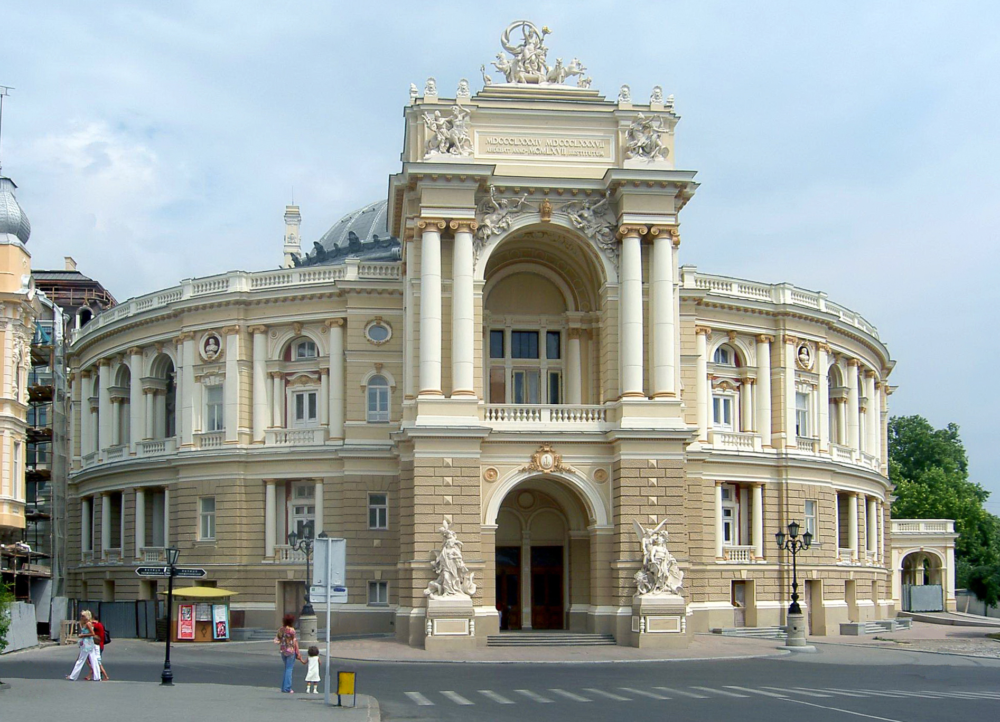

01
Тимчасові споруди
Порядок розміщення кіосків і павільйонів, оформлення та продовження документів.
Як оформити ТСПравила, документи та контакти управління — щоб відкрити свою справу, розмістити тимчасову споруду або захистити свої права.
УПРАВЛІННЯ РОЗВИТКУ СПОЖИВЧОГО РИНКУ · ОДЕСА

Порядок розміщення кіосків і павільйонів, оформлення та продовження документів.
Як оформити ТСКонсультації з питань торгівлі, послуг і розгляд звернень щодо порушених прав.
Куди звернутисяКерівництво, підрозділи, графік особистого прийому та офіційні документи.
Про управління